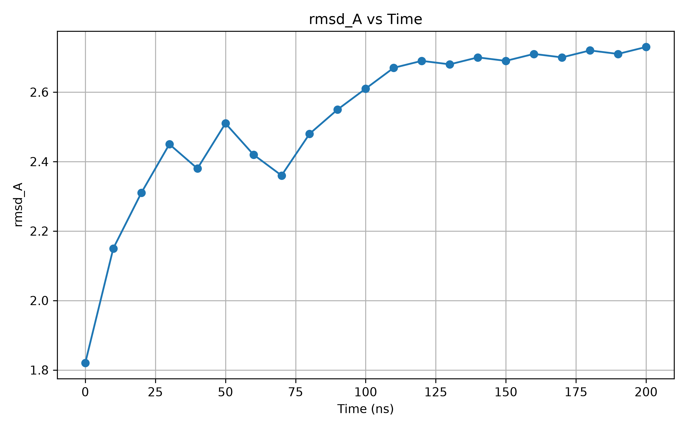
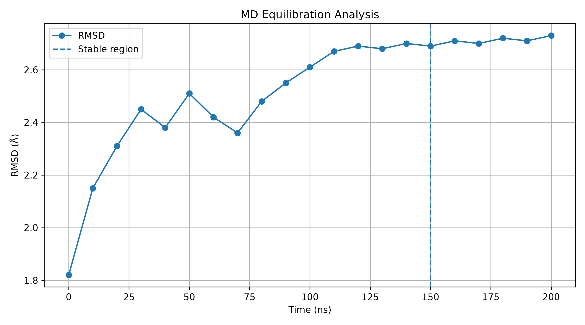
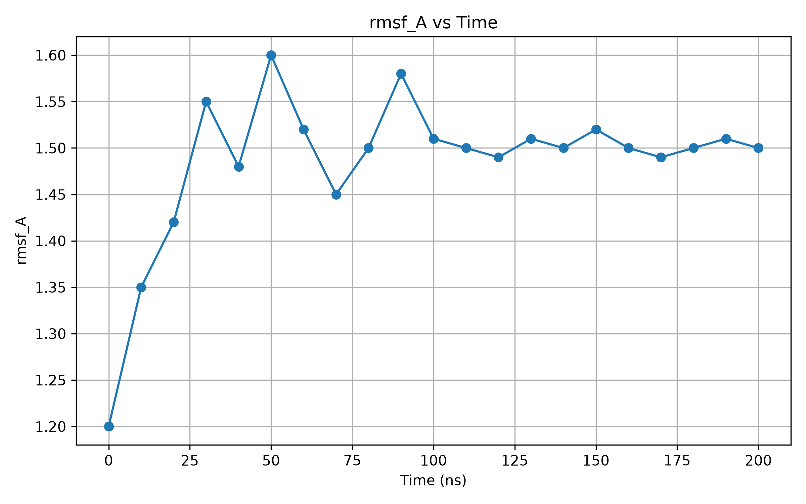
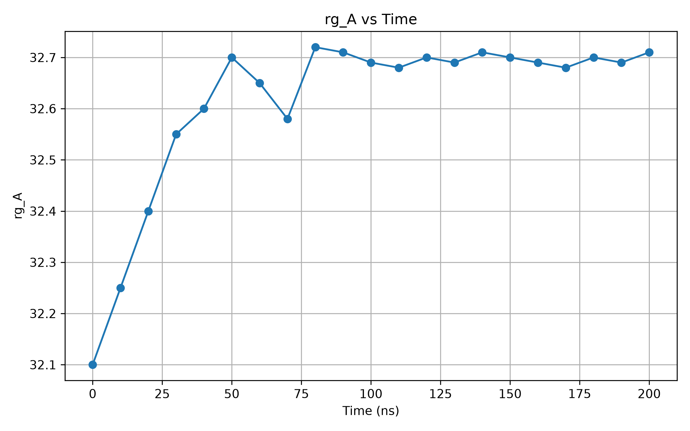
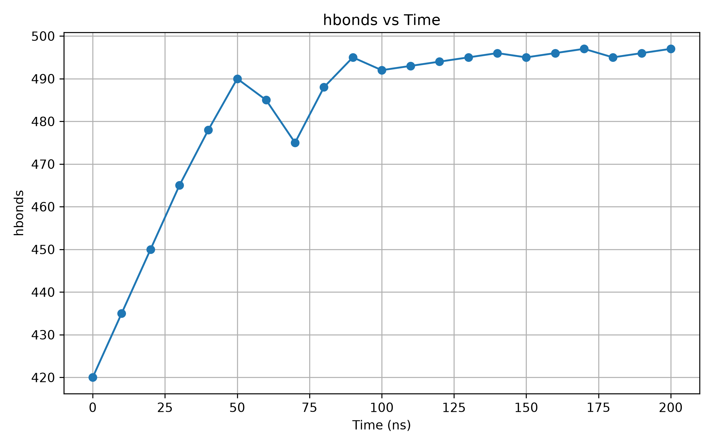
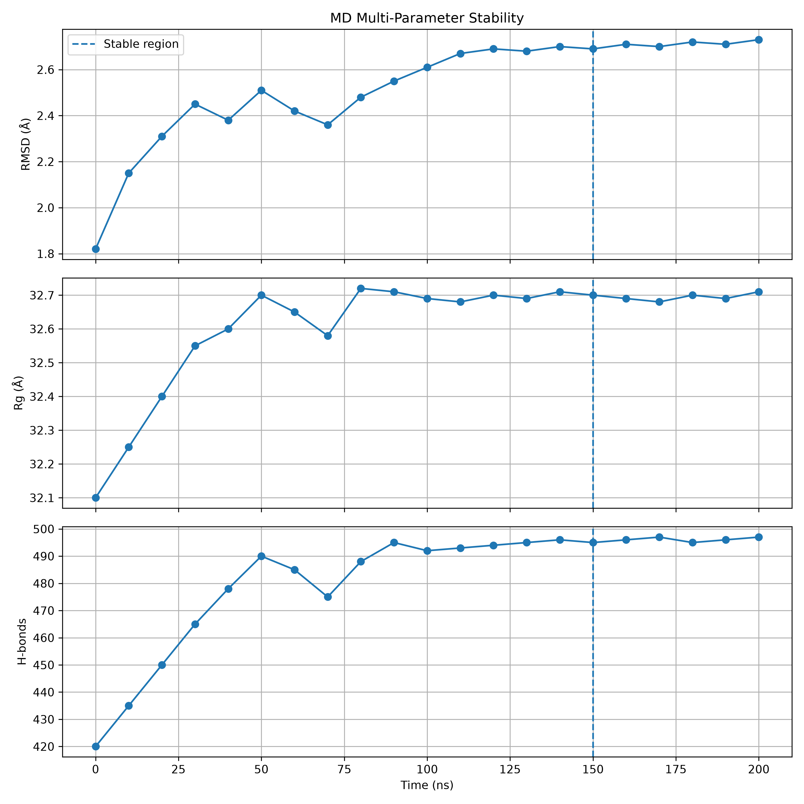
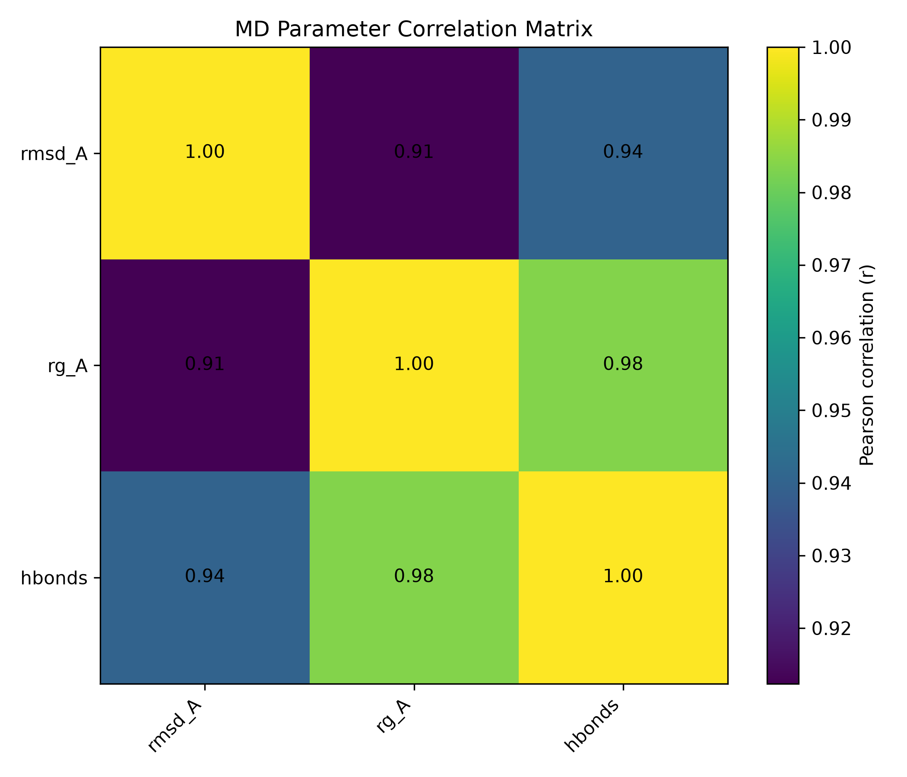
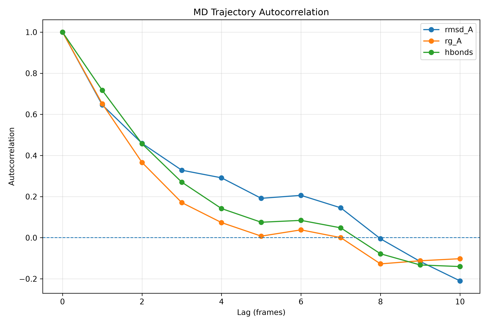
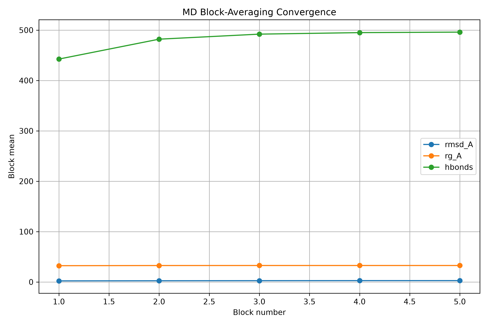
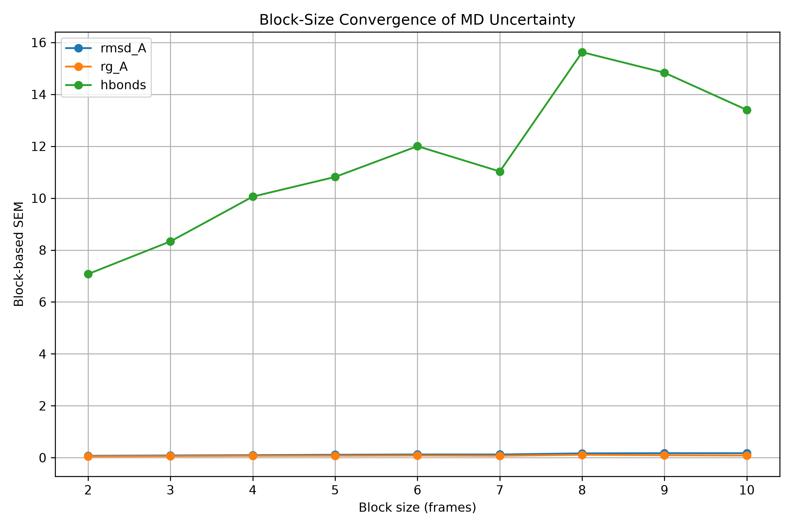

This report presents an automated analysis of molecular dynamics trajectory observables using a reproducible computational workflow. The pipeline evaluates trajectory quality, structural stability, equilibration behavior, molecular compactness, hydrogen-bond interactions, residue-level flexibility, statistical relationships, temporal correlation, uncertainty, and reproducibility.
The analysis is intended to provide a systematic computational assessment of MD trajectory behavior rather than relying on a single stability metric.
parameter,frames,mean,minimum,maximum,std hbonds,21,482.23809523809524,420.0,497.0,21.929215129376523 rg_A,21,32.61428571428572,32.1,32.72,0.16575799916056633 rmsd_A,21,2.525714285714286,1.82,2.73,0.23109676390143222 rmsf_A,21,1.4847619047619047,1.2,1.6,0.08280211637506905
The automated pipeline performs input validation before calculating trajectory statistics and generating figures.
============================================================
AUTOMATED MD ANALYSIS REPORT
============================================================
PROJECT
------------------------------------------------------------
Automated Molecular Dynamics Analysis Pipeline
DATASET SUMMARY
------------------------------------------------------------
hbonds
Frames: 21
Mean: 482.238
Minimum: 420.000
Maximum: 497.000
Standard deviation: 21.929
rg_A
Frames: 21
Mean: 32.614
Minimum: 32.100
Maximum: 32.720
Standard deviation: 0.166
rmsd_A
Frames: 21
Mean: 2.526
Minimum: 1.820
Maximum: 2.730
Standard deviation: 0.231
rmsf_A
Frames: 21
Mean: 1.485
Minimum: 1.200
Maximum: 1.600
Standard deviation: 0.083
STABILITY ANALYSIS
------------------------------------------------------------
First stable region: 150 ns
Last stable frame: 200 ns
Stable frames: 6
Stable-region statistics:
RMSD mean: 2.710 �
RMSD SD: 0.014 �
Rg mean: 32.695 �
Rg SD: 0.010 �
H-bonds mean: 496.0
H-bonds SD: 0.894
FINAL FRAME
------------------------------------------------------------
Time: 200 ns
RMSD: 2.730 �
Rg: 32.710 �
H-bonds: 497
CONCLUSION
------------------------------------------------------------
The trajectory contains a region in which RMSD, radius of gyration, and hydrogen-bond fluctuations simultaneously satisfy the defined stability criteria.
============================================================
Root-mean-square deviation (RMSD) is used to assess structural deviation of the simulated system relative to the reference structure or starting conformation.


Root-mean-square fluctuation (RMSF) describes residue-level flexibility throughout the analyzed trajectory.

The radius of gyration provides an estimate of the overall compactness of the simulated molecular system.

Hydrogen-bond analysis provides information about the persistence and variability of intermolecular or intramolecular hydrogen-bond interactions during the trajectory.

===== MD EQUILIBRATION REPORT ===== Trajectory length: 200 ns Total frames: 21 Rolling window: 5 frames Stability threshold: 0.02 � First stable region: 150 ns Stable windows: 6 Post-equilibration RMSD mean: 2.710 � Post-equilibration RMSD SD: 0.014 �
===== MULTI-PARAMETER STABILITY REPORT ===== Trajectory length: 200 ns Total frames: 21 Rolling window: 5 frames Stability thresholds: RMSD SD: 0.02 � Rg SD: 0.05 � H-bond SD: 10.0 First stable region: 150 ns Stable frames: 6

============================================================
SCIENTIFIC INTERPRETATION OF MD TRAJECTORY
============================================================
DATASET OVERVIEW
------------------------------------------------------------
Trajectory frames: 21
Trajectory duration: 200 ns
WHOLE-TRAJECTORY STATISTICS
------------------------------------------------------------
RMSD: 2.526 ± 0.231 Å
Radius of gyration: 32.614 ± 0.166 Å
Hydrogen bonds: 482.238 ± 21.929
RMSF: 1.485 ± 0.083 Å
Interpretation: The whole trajectory includes both the initial structural adaptation phase and the later equilibrated region. Therefore, whole-trajectory fluctuations should not be interpreted alone as evidence of persistent instability.
EQUILIBRATED / STABLE REGION
------------------------------------------------------------
Stable region: 150–200 ns
Stable duration: 50 ns
Stable frames: 6
RMSD
Mean: 2.710 Å
SD: 0.014 Å
Interpretation: The stable region shows very low RMSD fluctuation, supporting a stable conformational state.
Radius of Gyration
Mean: 32.695 Å
SD: 0.010 Å
Interpretation: The stable region demonstrates minimal variation in molecular compactness.
Hydrogen Bonds
Mean: 496.000
SD: 0.894
Interpretation: The stable region shows a highly stable hydrogen-bond interaction network.
STABILITY SYNTHESIS
------------------------------------------------------------
RMSD, radius of gyration, and hydrogen-bond behavior simultaneously satisfy the predefined stability criteria during the detected stable region. This supports the presence of a stable conformational regime during the latter portion of the trajectory.
RMSF FLEXIBILITY
------------------------------------------------------------
Mean RMSF: 1.485 Å
Minimum RMSF: 1.200 Å
Maximum RMSF: 1.600 Å
Interpretation: RMSF provides information about residue-level flexibility and should be examined together with the residue-wise RMSF profile to identify highly mobile regions.
FINAL SCIENTIFIC CONCLUSION
------------------------------------------------------------
The MD trajectory exhibits an initial structural adaptation phase followed by a stable conformational regime from approximately 150 to 200 ns. During this region, RMSD fluctuation remains low, the radius of gyration remains stable, and the hydrogen-bond network shows minimal variation. Collectively, these observations support structural stabilization of the simulated system during the latter portion of the trajectory.
============================================================
MD CORRELATION ANALYSIS REPORT
============================================================
DATASET
------------------------------------------------------------
Frames analyzed: 21
Trajectory duration: 200 ns
PEARSON CORRELATION MATRIX
------------------------------------------------------------
rmsd_A rg_A hbonds
rmsd_A 1.000 0.912 0.940
rg_A 0.912 1.000 0.984
hbonds 0.940 0.984 1.000
PAIRWISE INTERPRETATION
------------------------------------------------------------
RMSD vs Radius of Gyration
Pearson r: 0.912
Interpretation: very strong positive correlation
RMSD vs Hydrogen Bonds
Pearson r: 0.940
Interpretation: very strong positive correlation
Radius of Gyration vs Hydrogen Bonds
Pearson r: 0.984
Interpretation: very strong positive correlation
SCIENTIFIC NOTE
------------------------------------------------------------
Correlation analysis describes linear association between MD observables. Correlation does not establish causation. The observed relationships should therefore be interpreted together with trajectory stability, structural analysis, hydrogen-bond analysis, RMSF, and other mechanistic evidence.

============================================================
EQUILIBRATED MD CORRELATION ANALYSIS
============================================================
STABLE REGION
------------------------------------------------------------
Frames analyzed: 6
Time range: 150–200 ns
PEARSON CORRELATION MATRIX
------------------------------------------------------------
rmsd_A rg_A hbonds
rmsd_A 1.000 0.539 0.316
rg_A 0.539 1.000 -0.213
hbonds 0.316 -0.213 1.000
PAIRWISE INTERPRETATION
------------------------------------------------------------
RMSD vs Radius of Gyration
Pearson r: 0.539
Interpretation: moderate positive correlation
RMSD vs Hydrogen Bonds
Pearson r: 0.316
Interpretation: weak positive correlation
Radius of Gyration vs Hydrogen Bonds
Pearson r: -0.213
Interpretation: very weak negative correlation
SCIENTIFIC NOTE
------------------------------------------------------------
Correlation describes linear association between MD observables and does not establish causation. Because the analysis is restricted to the equilibrated region, these relationships are less likely to reflect the initial structural adaptation phase. Nevertheless, correlation should be interpreted together with RMSD, Rg, hydrogen-bond, RMSF, and structural analyses.
============================================================
STATISTICAL MD CORRELATION ANALYSIS
============================================================
METHODS
------------------------------------------------------------
Pearson correlation was used to assess linear association.
Spearman correlation was used to assess monotonic association.
95% confidence intervals were estimated using bootstrap resampling.
Bootstrap iterations: 5000
PAIRWISE RESULTS
------------------------------------------------------------
rmsd_A vs rg_A
n: 21
Pearson r: 0.912
Pearson p-value: 8.37218e-09
Pearson 95% CI: 0.664 to 0.970
Pearson interpretation: very strong positive association
Spearman rho: 0.664
Spearman p-value: 0.00104116
Spearman 95% CI: 0.215 to 0.907
rmsd_A vs hbonds
n: 21
Pearson r: 0.940
Pearson p-value: 2.48944e-10
Pearson 95% CI: 0.815 to 0.978
Pearson interpretation: very strong positive association
Spearman rho: 0.940
Spearman p-value: 2.5896e-10
Spearman 95% CI: 0.812 to 0.989
rg_A vs hbonds
n: 21
Pearson r: 0.984
Pearson p-value: 1.13219e-15
Pearson 95% CI: 0.934 to 0.995
Pearson interpretation: very strong positive association
Spearman rho: 0.674
Spearman p-value: 0.000800743
Spearman 95% CI: 0.192 to 0.934
SCIENTIFIC NOTE
------------------------------------------------------------
Correlation quantifies statistical association and does not establish causation. MD trajectory observations are also temporally correlated, so effective sample size and independence should be considered when interpreting p-values and confidence intervals.
OUTPUT
Results CSV: statistical_correlations.csv
Report: statistical_correlation_report.txt
============================================================
EFFECTIVE SAMPLE SIZE ANALYSIS
============================================================
PURPOSE
------------------------------------------------------------
Effective sample size (ESS) estimates the number of approximately independent observations represented by a temporally correlated MD trajectory.
METHOD
------------------------------------------------------------
Autocorrelation was calculated across trajectory frames. The integrated autocorrelation time was estimated using an initial-positive-sequence approach, and ESS was estimated as N/(2*tau).
RESULTS
------------------------------------------------------------
rmsd_A
Frames: 21
Lag-1 autocorrelation: 0.6460
Lag-2 autocorrelation: 0.4590
Integrated autocorrelation time: 2.7674
Effective sample size: 3.79
Independent-frame fraction: 0.1807
rg_A
Frames: 21
Lag-1 autocorrelation: 0.6512
Lag-2 autocorrelation: 0.3662
Integrated autocorrelation time: 1.8079
Effective sample size: 5.81
Independent-frame fraction: 0.2766
hbonds
Frames: 21
Lag-1 autocorrelation: 0.7170
Lag-2 autocorrelation: 0.4569
Integrated autocorrelation time: 2.2933
Effective sample size: 4.58
Independent-frame fraction: 0.2180
SCIENTIFIC INTERPRETATION
------------------------------------------------------------
MD trajectory frames are generally temporally correlated and therefore should not automatically be treated as independent statistical observations. ESS provides a more conservative estimate of the information content of the trajectory than the raw frame count.
A substantially smaller ESS than the raw number of frames indicates strong temporal correlation. Statistical tests and confidence intervals based on the raw frame count should therefore be interpreted cautiously.
IMPORTANT LIMITATION
------------------------------------------------------------
The present dataset contains only a limited number of trajectory frames. ESS estimates can therefore be unstable and should be interpreted as diagnostic rather than definitive. For production MD analysis, a much larger number of appropriately sampled frames is recommended.

============================================================
BLOCK AVERAGING UNCERTAINTY ANALYSIS
============================================================
PURPOSE
------------------------------------------------------------
Block averaging was used to estimate uncertainty while accounting for temporal correlation between neighboring MD trajectory frames.
METHOD
------------------------------------------------------------
The trajectory was divided into approximately equal blocks. Means were calculated for each block, and the variability among block means was used to estimate a block-based standard error. Incomplete trailing frames were excluded from block calculations.
RESULTS
------------------------------------------------------------
rmsd_A
Frames: 21
Block size: 4
Number of blocks: 5
Discarded trailing frames: 1
Mean: 2.5257
Standard deviation: 0.2311
Naive SEM: 0.0504
Block mean SD: 0.2194
Block-based SEM: 0.0981
rg_A
Frames: 21
Block size: 4
Number of blocks: 5
Discarded trailing frames: 1
Mean: 32.6143
Standard deviation: 0.1658
Naive SEM: 0.0362
Block mean SD: 0.1615
Block-based SEM: 0.0722
hbonds
Frames: 21
Block size: 4
Number of blocks: 5
Discarded trailing frames: 1
Mean: 482.2381
Standard deviation: 21.9292
Naive SEM: 4.7853
Block mean SD: 22.4944
Block-based SEM: 10.0598
SCIENTIFIC INTERPRETATION
------------------------------------------------------------
Frame-level standard errors assume that observations are independent. MD trajectory frames are commonly temporally correlated, so this assumption can lead to overconfident uncertainty estimates. Block averaging provides a simple diagnostic approach for evaluating how uncertainty changes when correlated frames are grouped together.
LIMITATION
------------------------------------------------------------
The present demonstration trajectory contains only a small number of frames. Consequently, the number of available blocks is limited and block-based uncertainty estimates may themselves be unstable. For production MD studies, substantially longer trajectories with appropriately sampled frames are recommended.

============================================================
BLOCK-SIZE CONVERGENCE ANALYSIS
============================================================
PURPOSE
------------------------------------------------------------
Block-size sensitivity was evaluated to determine how uncertainty estimates change as increasingly large groups of temporally correlated MD frames are averaged together.
METHOD
------------------------------------------------------------
Multiple block sizes were evaluated independently. For each block size, complete blocks were constructed, block means were calculated, and the standard error of the block means was estimated.
RESULTS
------------------------------------------------------------
rmsd_A
Block size: 2 frames | Blocks: 10 | Discarded: 1 | Block SEM: 0.07247
Block size: 3 frames | Blocks: 7 | Discarded: 0 | Block SEM: 0.08544
Block size: 4 frames | Blocks: 5 | Discarded: 1 | Block SEM: 0.09814
Block size: 5 frames | Blocks: 4 | Discarded: 1 | Block SEM: 0.11141
Block size: 6 frames | Blocks: 3 | Discarded: 3 | Block SEM: 0.12316
Block size: 7 frames | Blocks: 3 | Discarded: 0 | Block SEM: 0.12313
Block size: 8 frames | Blocks: 2 | Discarded: 5 | Block SEM: 0.16688
Block size: 9 frames | Blocks: 2 | Discarded: 3 | Block SEM: 0.17333
Block size: 10 frames | Blocks: 2 | Discarded: 1 | Block SEM: 0.17250
rg_A
Block size: 2 frames | Blocks: 10 | Discarded: 1 | Block SEM: 0.05321
Block size: 3 frames | Blocks: 7 | Discarded: 0 | Block SEM: 0.06185
Block size: 4 frames | Blocks: 5 | Discarded: 1 | Block SEM: 0.07223
Block size: 5 frames | Blocks: 4 | Discarded: 1 | Block SEM: 0.07666
Block size: 6 frames | Blocks: 3 | Discarded: 3 | Block SEM: 0.08361
Block size: 7 frames | Blocks: 3 | Discarded: 0 | Block SEM: 0.07514
Block size: 8 frames | Blocks: 2 | Discarded: 5 | Block SEM: 0.11063
Block size: 9 frames | Blocks: 2 | Discarded: 3 | Block SEM: 0.09444
Block size: 10 frames | Blocks: 2 | Discarded: 1 | Block SEM: 0.08350
hbonds
Block size: 2 frames | Blocks: 10 | Discarded: 1 | Block SEM: 7.07696
Block size: 3 frames | Blocks: 7 | Discarded: 0 | Block SEM: 8.33419
Block size: 4 frames | Blocks: 5 | Discarded: 1 | Block SEM: 10.05982
Block size: 5 frames | Blocks: 4 | Discarded: 1 | Block SEM: 10.81804
Block size: 6 frames | Blocks: 3 | Discarded: 3 | Block SEM: 12.00244
Block size: 7 frames | Blocks: 3 | Discarded: 0 | Block SEM: 11.02882
Block size: 8 frames | Blocks: 2 | Discarded: 5 | Block SEM: 15.62500
Block size: 9 frames | Blocks: 2 | Discarded: 3 | Block SEM: 14.83333
Block size: 10 frames | Blocks: 2 | Discarded: 1 | Block SEM: 13.40000
SCIENTIFIC INTERPRETATION
------------------------------------------------------------
Block-size convergence provides a diagnostic for whether uncertainty estimates become stable as temporally correlated observations are grouped. Strong variation across block sizes indicates that the available trajectory may be too short to obtain a robust uncertainty estimate.
LIMITATION
------------------------------------------------------------
Only 21 frames are currently available. Consequently, large block sizes produce very few independent blocks, and apparent convergence should not be interpreted as definitive evidence of statistical convergence. Longer trajectories with substantially more sampled frames are required for production-level uncertainty quantification.

============================================================
MD ANALYSIS REPRODUCIBILITY REPORT
============================================================
PROJECT
------------------------------------------------------------
Project: Automated MD Analysis Pipeline
Analysis date: 2026-08-19T22:13:02.040163-07:00
TRAJECTORY
------------------------------------------------------------
Frames: 21
Duration: 200.0 ns
SOFTWARE ENVIRONMENT
------------------------------------------------------------
Python: 3.13.15
Pandas: 3.0.5
NumPy: 2.5.2
Matplotlib: 3.11.1
Platform: Windows-11-10.0.22000-SP0
VERSION CONTROL
------------------------------------------------------------
Branch: main
Commit: 2f2ead7
Working tree: MODIFIED
INPUT FILES
------------------------------------------------------------
hbonds.csv | Rows: 21 | Columns: time_ns, hbonds
rg.csv | Rows: 21 | Columns: time_ns, rg_A
rmsd.csv | Rows: 21 | Columns: time_ns, rmsd_A
rmsf.csv | Rows: 21 | Columns: time_ns, rmsf_A
ANALYSIS MODULES
------------------------------------------------------------
[PASS] md_pipeline.py
[PASS] equilibrium_detector.py
[PASS] multi_parameter_stability.py
[PASS] stability_plot.py
[PASS] final_report.py
[PASS] scientific_interpretation.py
[PASS] correlation_analysis.py
[PASS] correlation_stable.py
[PASS] statistical_analysis.py
[PASS] effective_sample_size.py
[PASS] block_averaging.py
[PASS] block_convergence.py
[PASS] reproducibility_report.py
OUTPUT FILES
------------------------------------------------------------
[PASS] autocorrelation.png
[PASS] block_averaging.png
[PASS] block_averaging_report.txt
[PASS] block_convergence.csv
[PASS] block_convergence.png
[PASS] block_convergence_report.txt
[PASS] block_statistics.csv
[PASS] correlation_heatmap.png
[PASS] correlation_matrix.csv
[PASS] correlation_report.txt
[PASS] effective_sample_size.csv
[PASS] effective_sample_size_report.txt
[PASS] equilibrium_analysis.csv
[PASS] equilibrium_report.txt
[PASS] final_md_report.txt
[PASS] hbonds.png
[PASS] multi_parameter_stability.png
[PASS] report.txt
[PASS] rg_A.png
[PASS] rmsd_A.png
[PASS] rmsd_equilibrium.png
[PASS] rmsf_A.png
[PASS] scientific_interpretation.txt
[PASS] stability_analysis.csv
[PASS] stability_report.txt
[PASS] stable_correlation_matrix.csv
[PASS] stable_correlation_report.txt
[PASS] stable_region.csv
[PASS] statistical_correlation_report.txt
[PASS] statistical_correlations.csv
[PASS] summary.csv
REPRODUCIBILITY STATUS
------------------------------------------------------------
REVIEW REQUIRED
The Git working tree contains uncommitted changes.
| Category | Files |
|---|---|
| Trajectory plots | RMSD, RMSF, radius of gyration, hydrogen bonds |
| Stability | Equilibration and multi-parameter stability analyses |
| Correlation | Pearson correlation matrix and heatmap |
| Statistics | Pearson/Spearman correlations and confidence intervals |
| Temporal correlation | Autocorrelation and effective sample size |
| Uncertainty | Block averaging and block-size convergence |
| Reproducibility | Environment, manifest and version-control information |